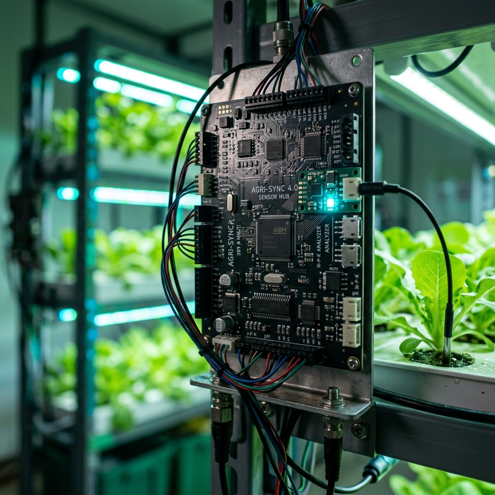
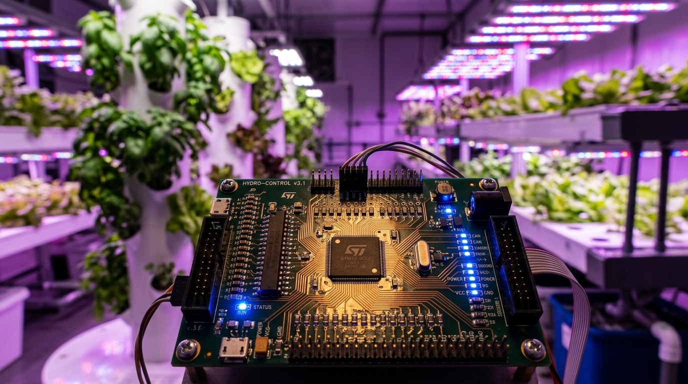
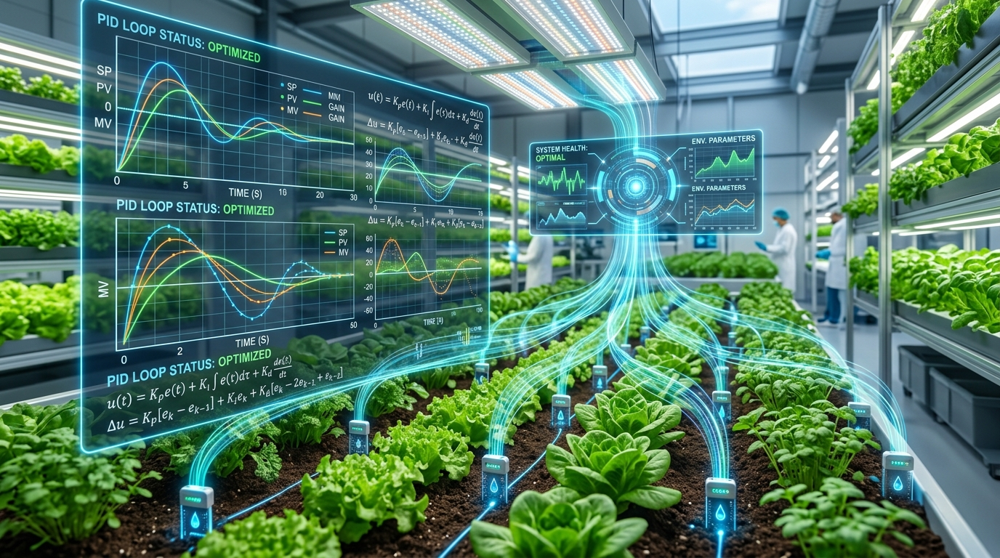
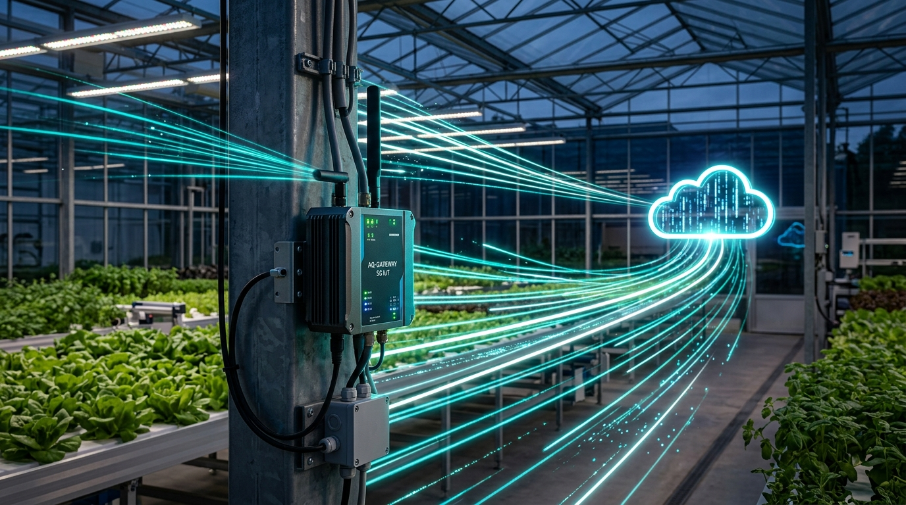
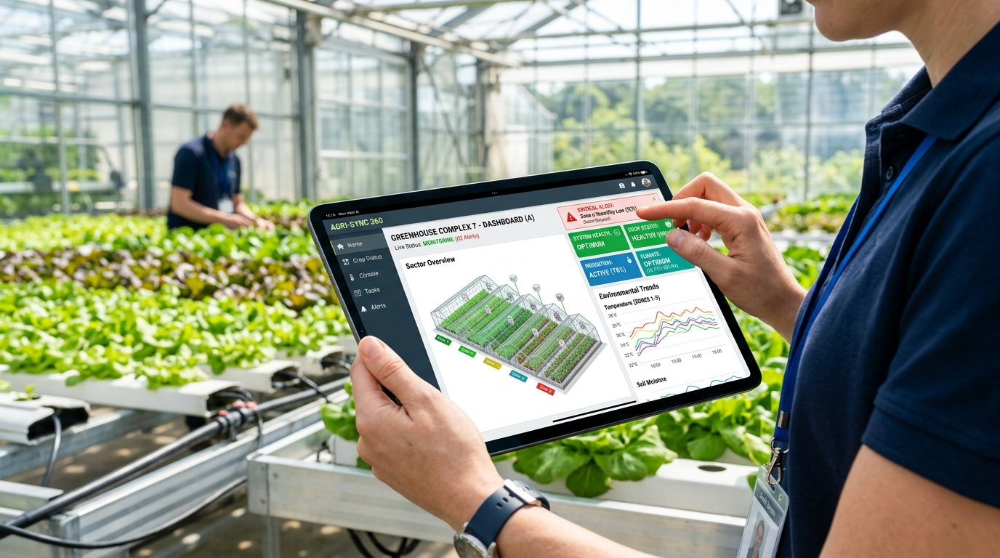

Architect the software stack and automation logic required to run a closed-loop agricultural system, detailing the microcontroller firmware, PID control algorithms, data logging pipeline, remote monitoring dashboard, and alert mechanisms for hardware state management.
This report outlines the comprehensive software and automation architecture required to operate a resilient, closed-loop agricultural system. The design covers the entire stack, from low-level firmware and control theory to cloud-based data ingestion and remote monitoring.
The system's foundation rests on a multi-layered firmware design built on FreeRTOS to ensure deterministic task execution and hardware reliability.
A Sensor Abstraction Layer (SAL) is implemented to decouple application logic from physical hardware. This allows for seamless swapping of I2C sensors (e.g., SHT3x) and analog components. Analog inputs, such as capacitive soil moisture sensors, utilize ADC drivers with Direct Memory Access (DMA) to minimize CPU overhead, applying linear transformations directly at the abstraction level.
Actuators, specifically pumps and lighting, are managed through defined logic:
The architecture employs a dual-stack communication strategy to ensure connectivity in remote environments:


Maintaining optimal growing conditions requires a specialized approach to Proportional-Integral-Derivative (PID) control, as different environmental variables exhibit unique physical dynamics.
| Variable | PID Strategy | Tuning Method | Reasoning |
|---|---|---|---|
| Temperature | Split-range PID | Ziegler-Nichols | Manages high thermal inertia with long sample times. |
| Humidity (VPD) | PI Control (Kd=0) | — | Eliminates "chattering" of humidifiers/dehumidifiers. |
| pH Levels | Gain-Scheduled | Time-Proportional | Addresses the logarithmic nonlinearity of pH. |
| Nutrients (EC) | Smith Predictor | Cohen-Coon | Compensates for dead-time in reservoir mixing. |
To prevent catastrophic failure (such as over-dosing nutrients or acids), the control logic integrates Integral Anti-Windup to freeze accumulation at actuator limits and Slew Rate Limiters to cap the rate of change. Sensor reliability is bolstered through Triple Modular Redundancy (TMR), which uses voting logic to identify and ignore drifting or failing sensors.
The pipeline is designed to handle the high-frequency data generated at the edge while optimizing for the limited bandwidth often found in agricultural settings.
Before transmission, data undergoes local validation, including range checks (dropping physically impossible values) and rate-of-change filters to eliminate transient noise. To minimize egress costs, the system uses Protocol Buffers (Protobuf) for serialization, providing an 80% reduction in payload size compared to JSON. Delta encoding and edge aggregation (e.g., sending 1-minute medians) further reduce bandwidth requirements.
Data is ingested via AWS IoT Core or Kafka to manage bursts and provide backpressure. The primary storage engine is TimescaleDB (built on PostgreSQL). This choice allows the system to join high-velocity time-series data with relational metadata (e.g., sensor locations, crop types) using standard SQL.


The user-facing layer prioritizes actionable insights over raw data density, focusing on system state management.
The dashboard utilizes a grid-based layout with high-level KPI cards. Semantic color-coding (Green/Yellow/Red) provides immediate situational awareness. Real-time telemetry is delivered via WebSockets, allowing for interactive time-series exploration without page refreshes.
To prevent "alert fatigue," the system implements a sophisticated evaluation engine:
This integrated approach ensures that the agricultural system is not only automated but also resilient to hardware drift, network instability, and environmental volatility.